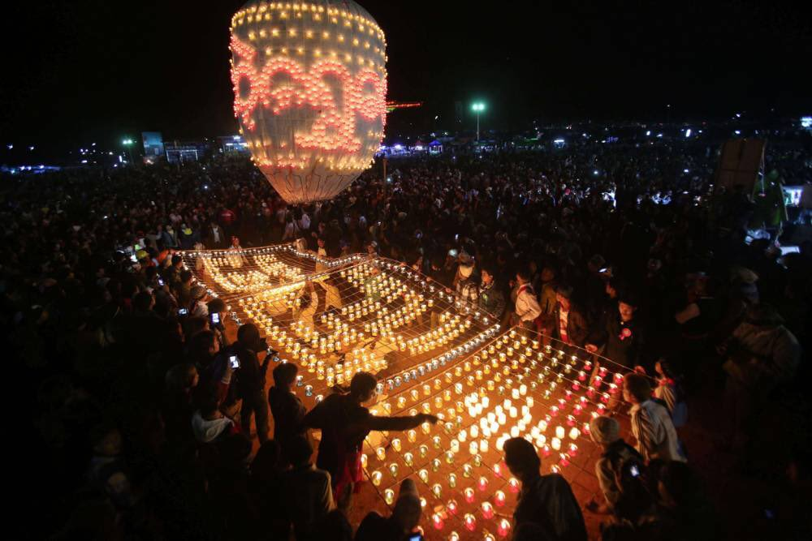

TaZaungTaing Festival
What is Tazaungdaing Festival?
The Tazaungdaing Festival is celebrated in November as a national holiday in Myanmar. It is the second festival of lights marks the end of the rainy season as well as the Kahtein season. During the festival, we celebrate with many activities. There are both large festivities like Taunggyi Hot Air Balloon Festival and small festivities like firework launching competitions and some live performances to entertain us. We offer monks and monasteries alms and offerings as well as a tradition of Myanmar. The Tazaungdaing Festival can be considered an essential part of Burmese culture and history.
Why do we celebrate Tazaungdaing Festival?
We celebrate Tazaungdaing to commemorate a story, in which Buddha's mother, Maya, is weaving yellow monk robes for Buddha during his renunciation. Buddha's aunt continued this tradition and offered new robes annually. We now carry on that tradition and celebrate festivals and release hot air balloons as an offering of light.
Notable festivities of
tazaungdaing